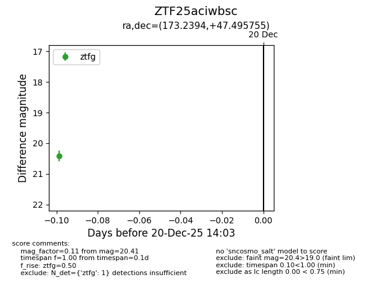
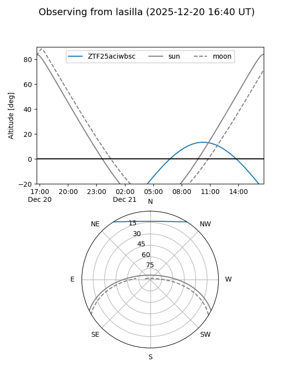
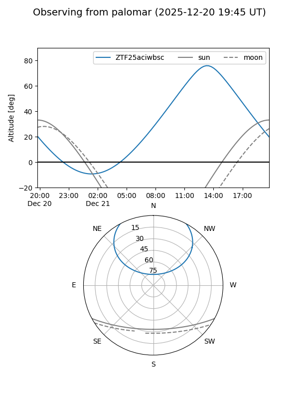

ZTF25aciwbsc
Target ZTF25aciwbsc at 2025-12-20 14:04
Aliases and brokers:
FINK: fink-portal.org/ZTF25aciwbsc
Lasair: lasair-ztf.lsst.ac.uk/objects/ZTF25aciwbsc
ALeRCE: alerce.online/object/ZTF25aciwbsc
alt names
ZTF25aciwbsc (ztf,fink_ztf)
Coordinates:
equatorial (ra, dec) = 173.2394,+47.49575
equatorial (HMS+DMS) = 11:32:57.46,+47:29:44.72
galactic (l, b) = (154.7301,+64.49759)
Flags:
Photometry:
last ztfg=20.41
1 ztfg detections
Lightcurve

Visibility


Additional plots